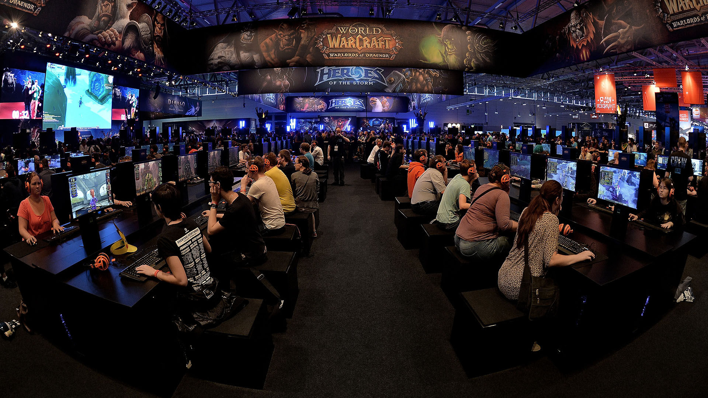
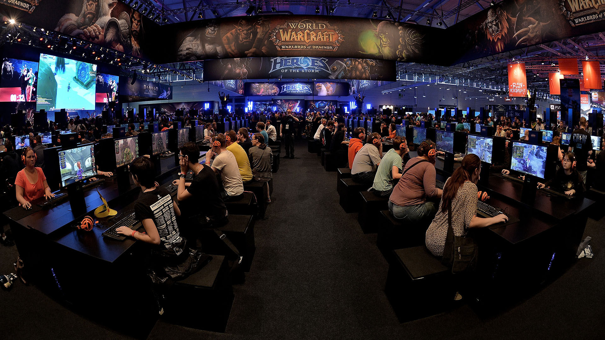

Generelle Informationen zu Gaming
Ein Computerspiel oder Videospiel ist ein elektronisches Spiel, dass durch Interaktion mit einer Benutzeroberfläche visuelles Feedback auf einem Videobildschirm, meist einem Fernsehgerät oder Computermonitor, generiert.
Computerspiele prägen heute unsere Kultur. Sie beeinflussen Menschen moderner Gesellschaften ebenso wie andere Massenmedien. Besonders bei Jugendlichen ist zu beobachten, dass sich ihr Alltag durch Computerspiele stark verändert. Die Bedeutung und Akzeptanz eines Computerspiels ist in den einzelnen Industriestaaten sehr unterschiedlich. In manchen Ländern führen Computerspiele gesellschaftlich und kulturell ein Nischendasein, wenn auch nicht zwingend wirtschaftlich. Dagegen hat sich beispielsweise in Südkorea eine bedeutende Kultur rund um Spiel und Spieler gebildet.
Geschichte der Videospiele
Die Computerspiele entwickelten sich innerhalb von ca. 50 Jahren von eher technischen Versuchen an Universitäten zu einer der einflussreichsten Freizeitgestaltungsformen des 21. Jahrhunderts.Bereits auf den ersten Computern gab es Versuche, bekannte Spiele, wie etwa das Damespiel, umzusetzen. Als erstes Computerspiel, welches neue Möglichkeiten jenseits altbekannter Spiele bot, wird oft das 1958 von dem Amerikaner William Higinbotham entwickelte Tennis for Two angesehen.
Tennis for two Gameplay
Die Entwicklung war stark abhängig vom technischen Fortschritt der Computertechnik. Spielte sie sich anfangs nur „nebenher“ auf eigentlich für andere Zwecke vorgesehenen Großrechnern an Universitäten ab, so wurde es in den 1970er Jahren durch die Kombination der inzwischen relativ kostengünstigen einfachen Logikchips mit der existierenden Fernsehtechnologie möglich, Spiele auch auf elektronischen Spielautomaten in der Öffentlichkeit zu spielen. Sehr erfolgreich war zum Beispiel Pong von Nolan Bushnell. Unternehmen wie Atari oder Magnavox brachten das Computerspiel in Form von Videospielkonsolen auch den Heimanwendern nahe. Es entwickelte sich ein rasant wachsender Massenmarkt.
Durch die Einführung der Heim- und Personal-Computer (PCs) in den 1980er Jahren entwickelten sich zunächst zwei technisch betrachtet unterschiedliche Arten des Computerspiels: Zum einen das Videospiel (damals „Telespiel“), welches auf speziellen Spielkonsolen fußte und das Computerspiel für Heimcomputer und später zunehmend für PCs. Im Jahr 1983 kam es zu einem Crash auf dem Videospielemarkt, vor allem durch die Überschwemmung des Marktes mit schlechten Videospielen und der wachsenden technischen Überlegenheit der Heimcomputer gegenüber den damaligen Spielkonsolen. In Japan, wo Heimcomputer noch nicht so erfolgreich waren, läutete Nintendo 1983 mit der Konsole Nintendo Entertainment System (kurz: NES) eine neue Ära der Videospiele ein, die etwa zwei Jahre später, 1985, auch Nordamerika und Europa erreichte.
Seit Mitte der 1990er Jahre werden die Bereiche für Spielekonsolen und PCs aus Vermarktungsgründen wieder zunehmend zusammengeführt. So bilden einheitliche Speichermedien (wie die CD-ROM oder DVD) und eine kompatible Hardware die Möglichkeit, Spiele für verschiedene Konsolen wie auch für PCs weitgehend parallel und somit kostengünstiger und für einen breiteren Markt zu entwickeln.

Computerspiele sind heute eine weit-verbreitete Form der Unterhaltung. Sie zählen zu den produktivsten Bereichen erzählerischer Aktivität in den digitalen Medien. Sie haben den Bereich der Interactive Fiction um sensuelle Eindrücke erweitert und den Benutzern ermöglicht, in Echtzeit zu interagieren. In vielen Ländern hat sich eine eigene Industrie für ihre Entwicklung gebildet, deren Umsätze teilweise die der jeweiligen Filmindustrie übersteigen.

Community
Communities in Videospielen bringen das Spiel zum Leben. Sie sind sehr vielseitig. Jedes Spiel hat seine eigene Playerbase aus allen möglichen verschiedenen Ländern, Kulturen und Altersklassen. Zahlreiche Videos, Bilder oder Geschichten über Videospielen werden täglich hochgeladen und sind somit ein großer Teil der sozialen Medien. Auch Dinge wie z.B. Cosplays und Anime werden in Verbindung mit Gaming gebracht. Es gibt auch Conventions für Gamer, auf denen zahlreiche tolle Events stattfinden auf denen sich alle möglichen Menschen treffen und eine gute Zeit haben!
 

Gaming als Karriere
Jeden Tag 8 bis 12 Stunden Videospiele zocken und damit Geld verdienen - klingt nach einer Traumvorstellung. Für E-Sportler ist der Traum Realität: Es ist ihr Beruf, zu spielen. Sie trainieren täglich viele Stunden lang, agieren im Team und treten bei Turnieren an.Jeden Tag 8 bis 12 Stunden Videospiele zocken und damit Geld verdienen - klingt nach einer Traumvorstellung. Für E-Sportler ist der Traum Realität: Es ist ihr Beruf, zu spielen. Sie trainieren täglich viele Stunden lang, agieren im Team und treten bei Turnieren an. Ebenfalls können Spieler oder Teams sponsoren bekommen, welche sie bezahlen und die Kosten für ihr Setup übernehmen. Dabei können starke Gewinne entstehen, jedoch ist dafür auch sehr viel Training, Talent und gedult benötigt und die Leistungen müssen stets in hochform sein. Der Beruf des Gamers ist also ein high risk high reward Beruf.